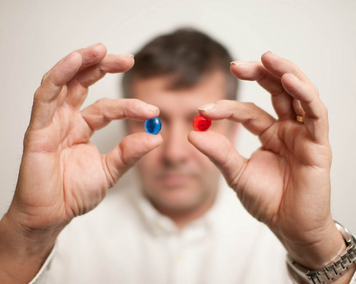

Когда не так давно в Кемерове вводили транспортные карты любому связанному с компьютерами ежу было понятно, что в жизни пользователя городского автобуса privacy стало немножко меньше.
В карту записывается информация о совершённых вами поездках, времени, маршруте. Это был маленький шажок.
Активно обсуждаемая сегодня универсальная электронная карта гражданина — уже не шажок, а настоящий прыжок в реальность, где нет человека, а есть только гражданин.

Планируется, что поддерживаемая на самом высоком уровне новая карта будет введена в широкое обращение в России уже в 2014 году. Карта совместит в себе личные документы — она будет являться одновременно и паспортом, водительским удостоверением и страховым свидетельством и документом из пенсионного фонда.
Кроме этого карта при поддержке Сбербанка РФ вероятно станет и платежным документом. Т.е. предъявляя только одну карту вы сможете к примеру, оформить кредит на автомобиль, оплатить его, заправить, а попав в ДТП, получить по ней страховку, оплатить ремонт. На первый взгляд удобно. Но возникает две больших проблемы
Первая, как я уже и говорил теряется сам человек. В матрице остаются только карты. Вторая конечно же безопасность. К данным практически обо всех наших вздохах получит доступ огромное количество служб и ведомств. В этих ведомствах работает еще большее количество людей. И по собственному опыту знаю, что не все они благоразумны. Президент, кстати, при обсуждении карт сегодня признал, что «эффективных способов защиты персональных данных в России пока нет».
Планируется что первые карты будут выдавать уже с января будущего года.